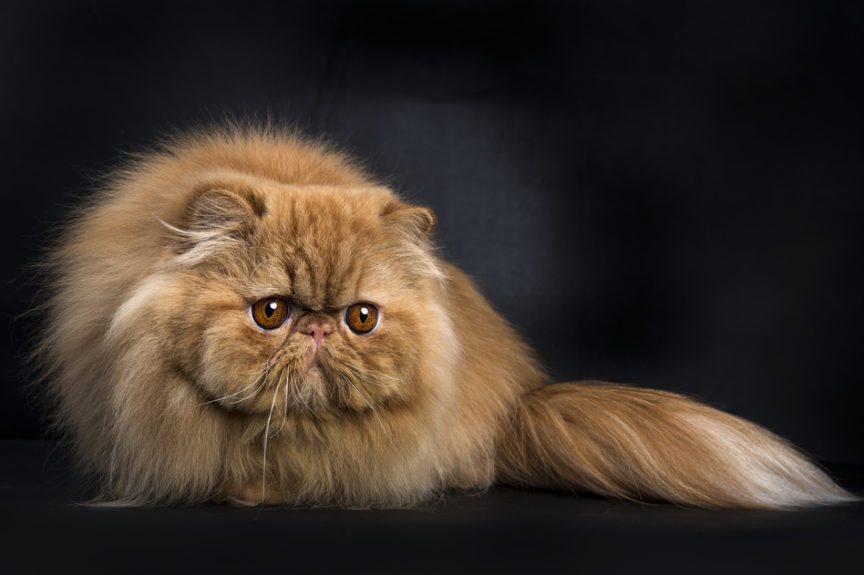

K O T Y 1 0 1
K O T Y 1 0 1

Koty Perskie
Długa i delikatna sierść z grubą warstwą podszerstka wyróżnia persy na tle innych
ras. Lecz nie każdy kot z długą sierścią jest persem – by móc zostać tak zaklasyfikowanym, zwierzę musi spełniać jeszcze wiele innych warunków!
Wygląd rasy został ukształtowany przez trzy różne związki hodowców. Dla każdego z nich ważna była inna cecha. Co do zasady,
kot powinien być średnio duży lub duży, waga kocurów może dochodzić do 7 kilogramów, kotek natomiast do 6.
Łapy powinny być relatywnie krótkie, ale mocne, z kosmykami włosów pomiędzy palcami okrągłych łapek.
REKLAMA